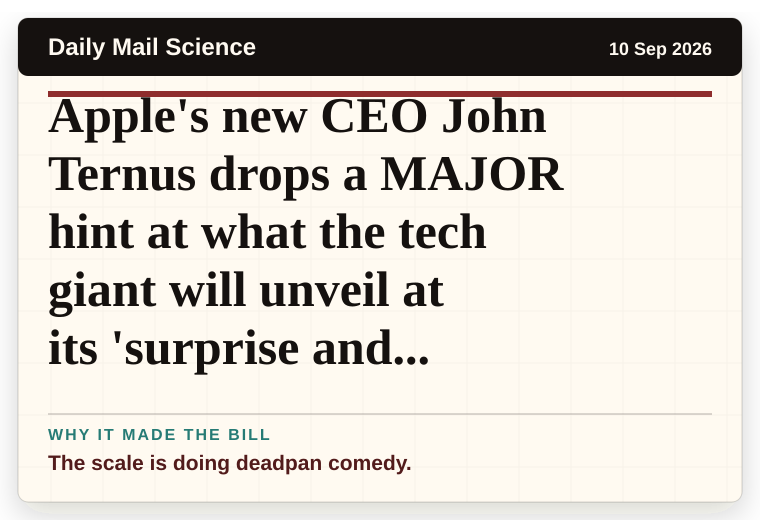
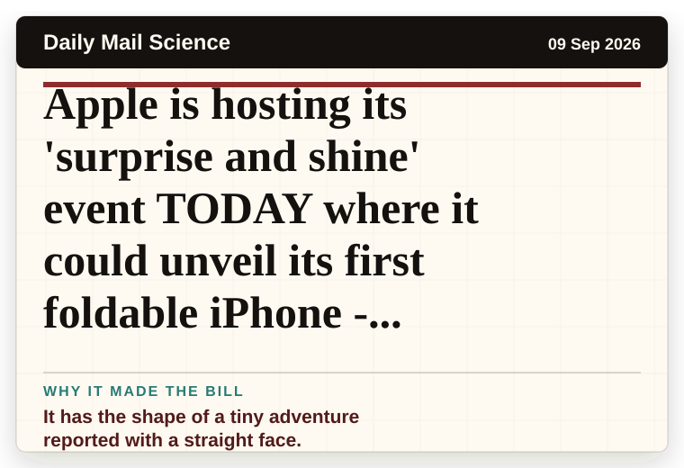
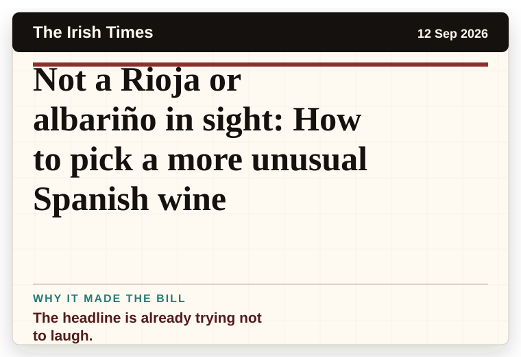
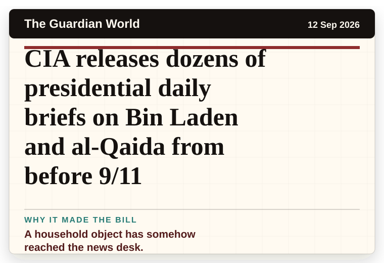
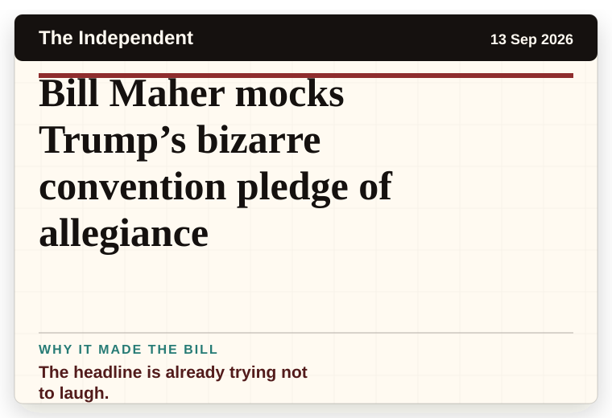
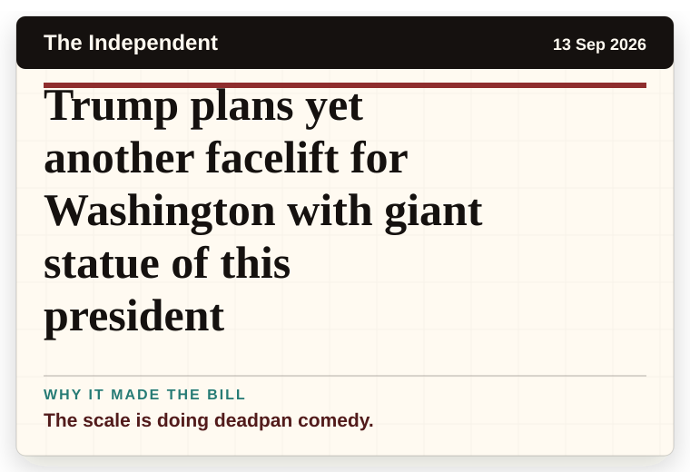
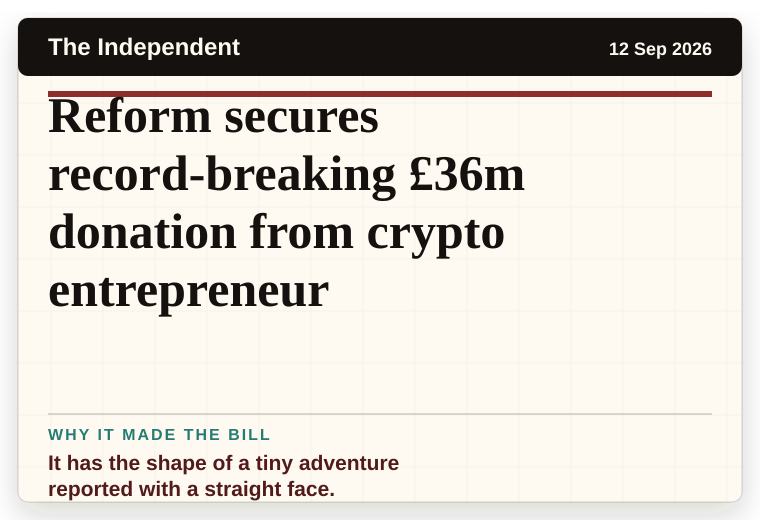

Mirror Weird News
United Kingdom
'I went to take bins out and got shock of my life after lifting wheelie bin lid'
A household object has somehow reached the news desk.
The latest daily picks, linked back to the original sources. Search the room, pick a source, or follow a headline out to the full story.
Record updated: 13 Sep 2026, 07:38 AM AEST
Showing 12 headline candidates from the refresh run completed on 13 Sep 2026, 07:38 AM AEST.
A household object has somehow reached the news desk.

The scale is doing deadpan comedy.

It has the shape of a tiny adventure reported with a straight face.

The scale is doing deadpan comedy.

A wonderfully specific detail has taken centre stage.

It has the shape of a tiny adventure reported with a straight face.

It has the shape of a tiny adventure reported with a straight face.

The headline is already trying not to laugh.

A household object has somehow reached the news desk.

The headline is already trying not to laugh.

The scale is doing deadpan comedy.

It has the shape of a tiny adventure reported with a straight face.